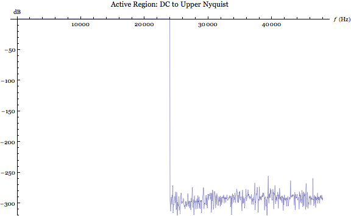
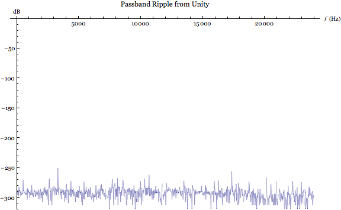
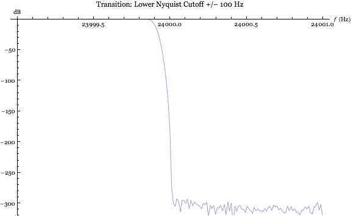
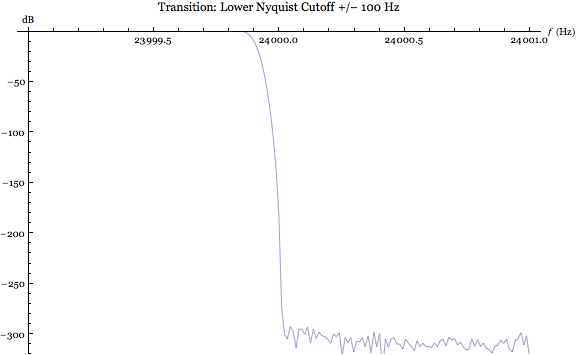

Brick Test Suite
96kHz to 48kHz
Input Files
Sweep_96k_10s_Precise.aiff
A linear frequency sweep from DC to Nyquist in ten seconds with an explicit sample rate of 96kHz. This file is precise—it was generated with large precision using Mathematica with each sample then being rounded to the closest double precision number. In practice, the only way to generate test files that make use of the full double-precision is to generate them at a higher precision.
Command Line
brick Sweep_96k_10s_Precise.aiff --samplerate=48000Hz --exportfilter=Sweep_96k_10s_Precise.fft
brick --inputsamplerate=96000Hz --samplerate=48000Hz --exportfilter=96k_48k_Steep.fft
Graphs
The following plots were generated from the Mathematica code supplied by Brick due to the --exportfilter parameter. In this case, Brick exports the raw complex frequency-domain of the filter being used in the sample rate conversion. The length of the filter is the smallest power-of-two that is large enough to hold all the filter coefficients. The unused samples are zero-padded.
  
